What this module covers
Module 2 picks up where Module 1 ended. The focus shifts from Guru Nanak alone to the line of succession after him — from Guru Angad through Guru Arjan, the fifth Guru. Alongside that lineage it foregrounds the women foundational to the early tradition (Mata Khivi, Bibi Amaro, Bibi Bhani), and it traces the formation of Sikh scripture — Guru Angad assembling Guru Nanak's narratives, Guru Amar Das compiling Gurbani, and Guru Arjan assembling the Adi Granth. Seeing what was included and excluded becomes a clue for how Gurbani is to be read.
- Was Guru Nanak just one more bhakti saint, or was a distinct Sikh community already forming?
- How does the idea of "one light through many bodies" shape Sikh succession?
- Why were Sikh women central — not secondary — to building the Panth?
- What does the assembly of the Adi Granth tell us about how to interpret Gurbani?
Part 1Entering the bhakti world
Module 2 begins by situating the early tradition within the wider Bhakti movement — a populist devotional current that pushed back against elite intermediaries. On the Indic side that meant resisting the authority of pandits; on the Islamic side, the clerical classes of qazis and sheikhs. The emphasis fell on a direct connection with the Divine through devotion, remembrance, and service — yet this was not "individual" in the way of the world-renouncing yogi: bhakti still prized gathering in sangat or satsang.
- An individual, direct connection to the Divine
- Removal of intermediaries — pushing back against the pandit and the sheikh / qazi class
- Communal gatherings (sangat / satsang), not solitary withdrawal
This raises a real scholarly debate, drawn from Nikky-Guninder Kaur's "The Founder Myth." Some scholars — especially W. H. McLeod — link Guru Nanak very closely with Kabir and the broader stream of Bhakti saints (c. 12th–16th century), placing him within an existing current rather than as the founder of a distinct community; the stronger version holds that a distinctly Sikh identity only emerges later, with Guru Gobind Singh and the Khalsa.
Early sources suggest a distinct Sikh community was forming much earlier. Bhai Gurdas presents Guru Nanak establishing a separate path — ਕੀਤੋਸੁ ਅਪਣਾ ਪੰਥੁ ਨਿਰਾਲਾ, "he made his own distinct path." The Persian Dabistan describes Sikhs as a distinct tradition; because its author met Guru Hargobind and Guru Har Rai, it is an especially valuable outside witness to how Sikhs were perceived in the seventeenth century.
Guru Nanak and Kabir — shared world, contested relationship
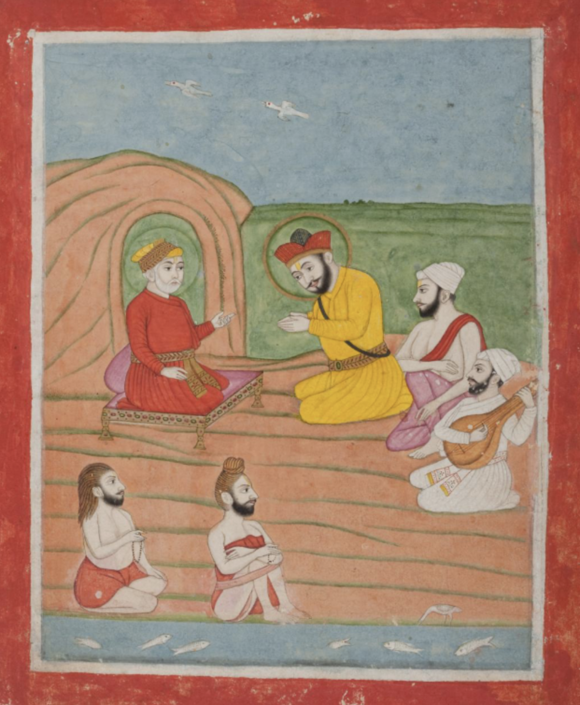
Kabir is the key figure for placing Guru Nanak in this devotional landscape. Like Guru Nanak, Kabir emphasises a direct relationship with the Divine, and his writings appear in Guru Granth Sahib. Yet their exact relationship is debated — even whether their lifetimes overlapped is unsettled, though the Janam Sakhis present them meeting. That meeting is never neutral: it frames how authority is imagined. Was it a meeting of equals, of succession, of discipleship, or of spiritual correction? Underneath the historical question sits a theological one: did Guru Nanak inherit Kabir's path, or stand on his own authority?
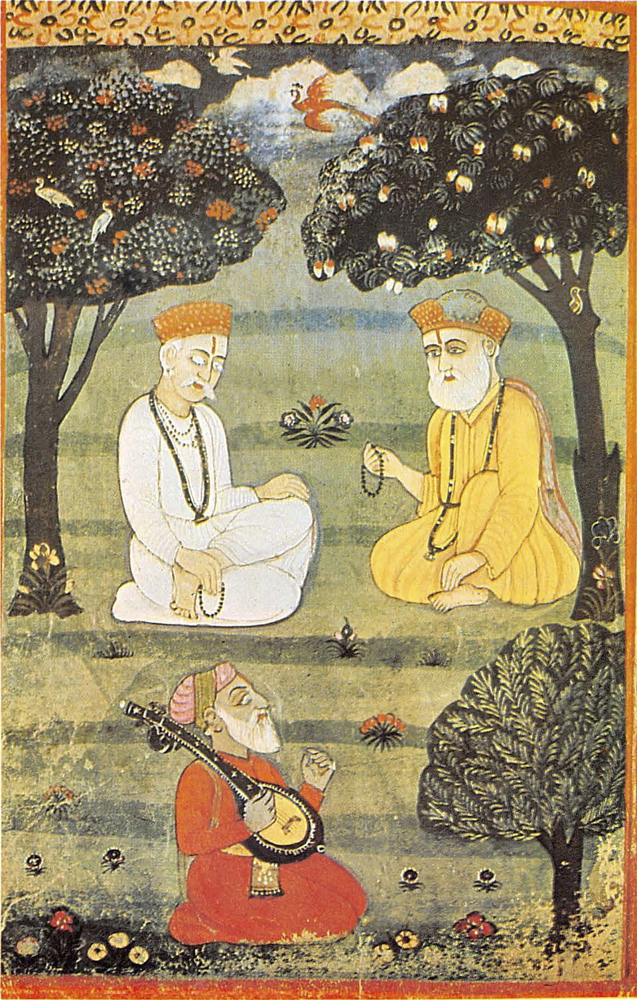
ਸੁਨਿ ਉਪਦੇਸੁ ਪੂਰੇ ਸਤਿਗੁਰੁ ਕਾ ਮਨ ਮਹਿ ਭਇਆ ਅਨੰਦੁ ।
ਮੁਕਤਿ ਕਾ ਦਾਤਾ ਬਾਬਾ ਨਾਨਕ ਰੰਚਕ ਰਾਮਾਨੰਦ ।
The B40 Janam Sakhi (so named for its British Library index number, dated 1733) reverses the usual assumption that Guru Nanak follows from Kabir. Here Kabir becomes the Sikh of Guru Nanak: Guru Nanak instructs him in liberation through devotion, and Kabir responds with a shabad praising Guru Nanak as the giver of salvation — diminishing even Ramananda, often remembered as Kabir's own guru.
By the eighteenth century, then, the question of who stands above whom was very much alive — a matter of prestige, lineage, and spiritual authority. Nineteenth-century works like Santokh Singh's Nanak Prakash continue the debate, claiming some Janam Sakhis tied to Kabir's followers had altered the relationship in Kabir's favour, with Santokh Singh's project framed partly as a correction. This also points to parallel communities — the Kabir Panth and the Dadupanth — which overlapped and exchanged with Sikhs, sometimes closely, sometimes adversarially. The real issue is not whether these communities shared a devotional world (they did) but how each understood its own centre of authority within it.
- Bhakti = direct devotion without intermediaries, but still communal (sangat), not solitary.
- Against the "founder myth," early Sikh and outside sources (Bhai Gurdas, the Dabistan) show a distinct Sikh community forming early.
- The Kabir–Nanak relationship is really a contest over authority; B40 makes Kabir the disciple of Guru Nanak.
Part 2Kartarpur & honest work
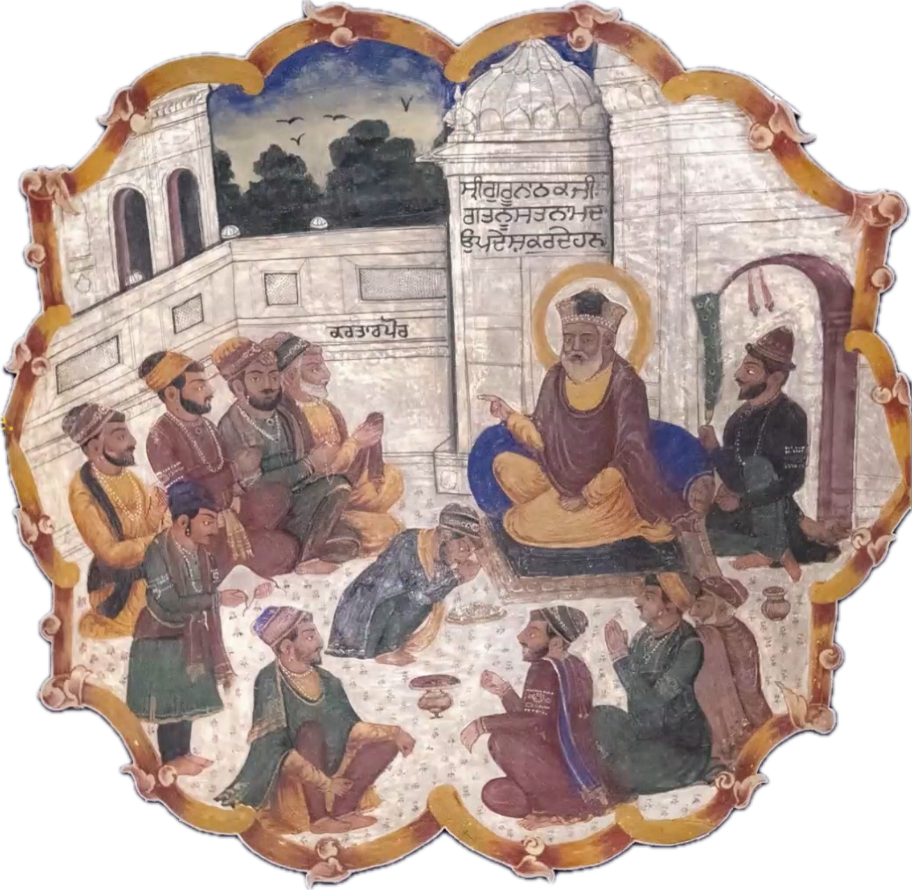
One of the clearest ways the early tradition is distinguished from other devotional communities is Guru Nanak's emphasis on social and ethical life within the world. After years of travel he returns and establishes Kartarpur, the "city of the Creator" — a visible expression of his vision: settled, ethical, communal life rather than wandering spirituality alone. This ties directly to Module 1's seva and Ishnān: spiritual life is not fulfilled in private experience but takes shape in how one lives, works, shares, and builds community. Founding a city signals a path not of escape from society but of transformed participation within it.
Honest work as virtuous action
ਮਖਟੂ ਹੋਇ ਕੈ ਕੰਨ ਪੜਾਏ ॥ ਫਕਰੁ ਕਰੇ ਹੋਰੁ ਜਾਤਿ ਗਵਾਏ ॥
ਗੁਰੁ ਪੀਰੁ ਸਦਾਏ ਮੰਗਣ ਜਾਇ ॥ ਤਾ ਕੈ ਮੂਲਿ ਨ ਲਗੀਐ ਪਾਇ ॥
ਘਾਲਿ ਖਾਇ ਕਿਛੁ ਹਥਹੁ ਦੇਇ ॥ ਨਾਨਕ ਰਾਹੁ ਪਛਾਣਹਿ ਸੇਇ ॥
The shabad criticises religious figures who avoid labour and live on status, begging, or social deference — the hungry mullah who makes the mosque his house; the ascetic who tears his ears, becomes a fakir, turns from the world, yet depends on others while calling himself guru or pir. Their prestige is stripped away. The culmination is a clear ideal: the one who works hard for what he eats and then gives some to others truly knows the path. It joins labour, honesty, sustenance, and generosity in a single line — rejecting both exploitative religiosity and escapist renunciation.
This is one of the clearest foundations for the threefold pattern of Sikh life — Nām Japo, Kirat Karo, Vand Chhako: recite the Divine Name, earn an honest livelihood, and share with others. The shabad presses especially on the last two: not charity in the abstract, but charity that arises from honest labour.
Kartarpur embodies exactly this. As the fresco's inscription notes, Guru Nanak gives the teaching of Satnam to the people there — but he is not only preaching it. He is farming the land and using that labour to feed the community through the communal kitchen. The kitchen is not a secondary institution but the lived form of the teaching itself: remembrance of the Divine, ethical labour, and generosity joined together — a practice the later Gurus continue rather than leave behind.
- Kartarpur makes Guru Nanak's path concrete: settled, ethical, communal life, not withdrawal.
- Honest work is itself virtuous; the true path joins labour, honesty, and sharing (Nām Japo · Kirat Karo · Vand Chhako).
- The langar is the teaching enacted — Guru Nanak farms the land and feeds the community from it.
Part 3One light, many bodies

When Guru Nanak appoints a successor, a central Sikh idea comes into view: the later Gurus are not separate leaders who merely follow in time, but carry forward the same light, mission, philosophy, and authority. Practices may develop and circumstances may change, but the inner light remains one.
The fresco illustrates it: Baba Buddha places the tilak on Guru Angad, marking him publicly as Guru, while Guru Nanak sits lower — and both wear halos. What is transferred is not merely organisational leadership but the same divine light; the continuity is spiritual, ontological, and liturgical, and it eventually informs the authority of Guru Granth Sahib itself.
Mahalla and Nanak — how the Gurus name themselves
This idea is built into the language of Guru Granth Sahib. The Gurus are identified in the headings not by personal name but by the title Mahalla — traced here to the Arabic hulul, "descent." Guru Nanak's bani appears under Mahalla Pehla (the First), Guru Angad's under Mahalla Duja (the Second), and so on; the headings themselves teach the Sikh understanding of succession. The same logic governs the poetic signature: where poets of the time signed with their own names, Guru Angad does not close his verses with "Angad" but with "Nanak" — as do Guru Amar Das, Guru Ram Das, Guru Arjan, and Guru Tegh Bahadur. Their individuality as persons remains, but their writing flows within a single current of Guruship: the voice is Nanak's light speaking through successive forms.
ਅਮਰਦਾਸ ਰਾਮਦਾਸ ਕਹਾਯੋ ॥ ਸਾਧਨਿ ਲਖਾ ਮੂੜ੍ਹ ਨਹਿ ਪਾਯੋ ॥੯॥
This was not only an internal Sikh way of speaking — outside observers noticed it too:
"They have come to believe that when Nānak abandoned his body, he entered that of Gurū Angad… Afterwards, Gurū Angad similarly descended into Amardās's body; and Rāmdās the same way into Gurū Arjan. They call each of them mahal — the first mahal being Nānak, the second Angad, and so on, till the fifth mahal, which is Gurū Arjan. Whoever does not regard Guru Arjan as identical to Bābā Nānak is… an infidel."
Dabistan-i Mazahib (1645)
Whether the disputed word is read as manmukh or moorakh, the meaning holds: to fail to see Guru Arjan as the same light as Guru Nanak is to fail spiritually. The principle that emerges is crucial for the whole tradition — the Gurus are historically distinct but spiritually one. Their succession is not a chain of replacement but the unfolding of one jyot through many forms.
- Succession transfers one light, not just leadership — "the King merely changed his body."
- This is built into the scripture: the Gurus are titled Mahalla and all sign their verses "Nanak."
- Inside (Bachittra Nāṭak) and outside (the Dabistan) sources agree: the Gurus are historically distinct but spiritually one jyot.
Part 4The Gurus & the women who built the Panth
Guru Angad Dev Ji — from Lehna to Angad
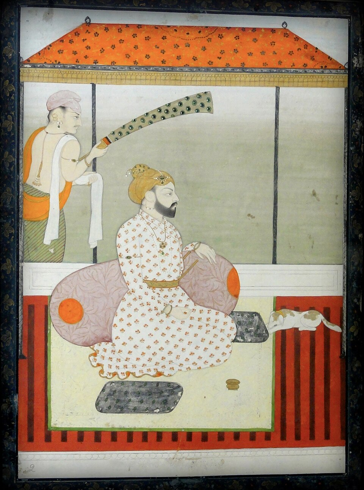
- 1504–1552 · reigned as Guru for 12 years · married to Mata Khivi (1506–1582)
- Promoted and formalised the Gurmukhi script
- Assembled the writings of Guru Nanak; patronised his life-stories (Janam Sakhis)
- Ran a wrestling training ground · composed 62 verses in Guru Granth Sahib · father of Bibi Amaro
Even his name is meaningful: Angad means "limb," suggesting closeness and organic unity with Guru Nanak. Born into the Trehan clan of the Khatris, he was known as Lehna and remembered as a devotee of the goddess Durga. Travelling to a Devi shrine, he passed through Kartarpur, heard the praise of Guru Nanak, and stopped. In older narratives the meeting is told with mythic intensity: entering Guru Nanak's residence, Lehna is said to have seen Durga herself performing seva there, sweeping the floor — a theological image expressing that the one he revered as exalted appeared as only a servant before the greatness of Guru Nanak. He stays, serves fully, passes repeated tests, and only then is anointed Guru.
His period sharpens the shape of the early community. He formalises Gurmukhi — not from nowhere, but developed from scripts already in circulation among traders, distinct from Devanagari and from the Persian/Arabic scripts tied to Islamic textual culture. A marginal note in the Goindwal Pothis even states that Guru Angad formulated Gurmukhi under Guru Nanak's supervision for writing the Guru's hymns. A distinct script is not just a tool — it helps create and sustain a distinct community, marking out a Sikh mode of preserving revelation.
He also begins assembling Guru Nanak's writings and becomes a patron of the Janam Sakhis, gathering Sikhs who had known Guru Nanak — Bhai Bala especially — to recite his life-stories, which are then written down as the earliest Janam Sakhi traditions. (Those earliest manuscripts no longer survive; according to Santokh Singh, Kabir Panthis acquired and distorted them.) Their collection shows how the life-stories were used: not as bare records but to explain Guru Nanak's mission and illuminate Gurbani — life-story and Shabad lighting one another.
Mata Khivi & the langar as living practice

ਲੰਗਰਿ ਦਉਲਤਿ ਵੰਡੀਐ ਰਸੁ ਅੰਮ੍ਰਿਤੁ ਖੀਰਿ ਘਿਆਲੀ ॥
ਮਾਤਾ ਖੀਵੀ ਸਹੁ ਸੋਇ ਜਿਨਿ ਗੋਇ ਉਠਾਲੀ ॥
Mata Khivi is one of the most important Sikh women of the early period — so highly regarded that she is named in Guru Granth Sahib itself. The praise is significant: the langar was not a background institution but a central, honoured expression of Sikh life. Guru Angad continues Guru Nanak's pattern — he participates in the kitchen, eats in it, sustains it — and Mata Khivi is remembered as actively overseeing and nourishing it. Langar becomes the material expression of Sikh values: labour, sharing, inclusion, and care.
These women were once clearly honoured, yet their stories have faded. Mata Khivi — named in scripture — is still not given her due in many modern tellings. That quiet fading reveals something about emphasis, and whose labour gets remembered in religious traditions.
Bibi Amaro — devotion, memory, and the link to Guru Amar Das
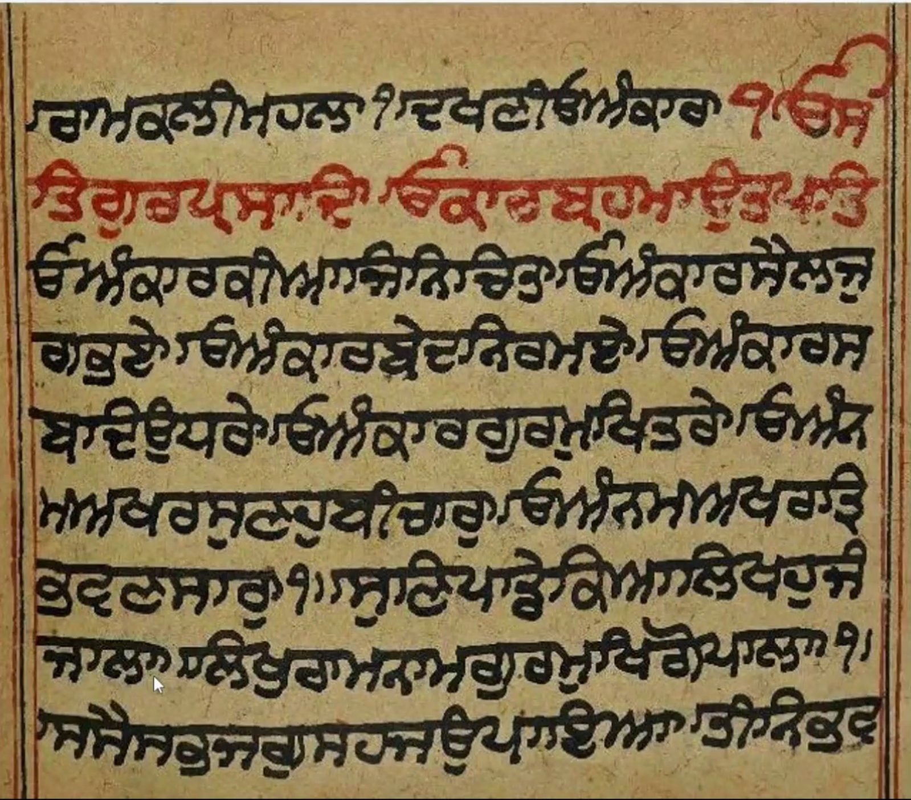
"Bibi Amaro memorised Japuji, [Dakhani] Onkar and Sidh Ghost, and would recite these daily with great love." … "She would recite Gurbani at all times of the day."
Bansāvalīnāmā (1769), pp. 52 & 54
Bibi Amaro, Guru Angad's daughter, is remembered as intensely devoted and astonishingly grounded in Gurbani — having memorised Japji Sahib, Dakhani Oankar, and Siddh Gosht (memorising Japji alone would be a great accomplishment). Later sources (Suraj Prakash) describe her rising at Amrit Vela, bathing, and reciting Gurbani in a voice of such sweetness and force that her brilliance could not be fully grasped. Crucially, she is the direct link through which Guru Amar Das — then an elderly man, not yet Guru — first comes into Guru Angad's orbit: hearing Bibi Amaro singing Gurbani in the early morning, he is pierced by the Shabad and drawn to its source. Married into his family, she becomes the bridge between the second and third Gurus.
If Bibi Amaro's singing of Gurbani is remembered as the very means by which a future Guru was awakened and drawn into discipleship, then women reciting, carrying, and transmitting Gurbani cannot be treated as secondary — which makes it striking that some Sikh sites today still bar women from performing kirtan. Projects like the Mahalla 9 calendar work to recover these figures, never truly minor in the tradition itself, only muted in later retellings.
Guru Amar Das Ji & the building of community
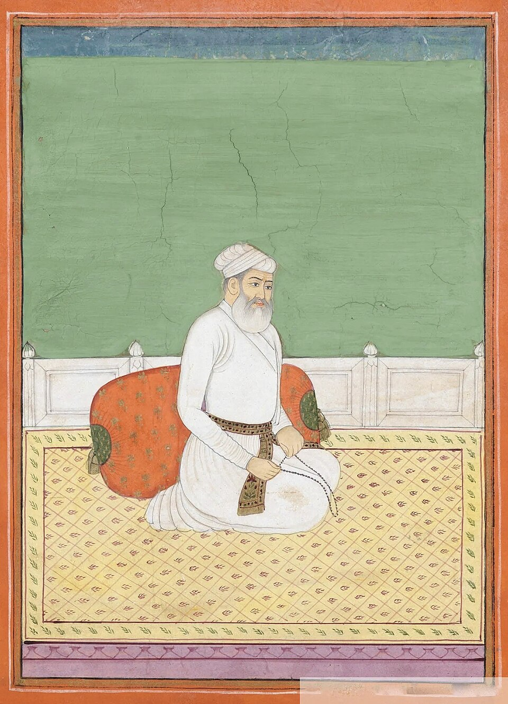
- 1479–1574 · reigned for 22 years · came to Guru Angad in old age and performed great seva
- Organised festivals so Sikhs could gather twice a year — Vaisakhi & Diwali
- Built the new city of Goindval and a step well, the Baolī Sāhib
- Set up the masand system across the 22 districts · gifted poet — 900+ verses · continued collecting Gurbani (the Goindwal Pothis)
Each Guru creates a lived social world: Guru Nanak had Kartarpur, Guru Angad had Khadur Sahib, Guru Amar Das develops Goindval, and Guru Ram Das will found Ramdaspur (Amritsar). The Sikh path is not only inward — it is embodied in settlement, labour, infrastructure, and organised communal life.
As the community expands, it needs to stay connected. Asked for shared gathering times, Guru Amar Das establishes Vaisakhi (spring) and Diwali (autumn) — not mere seasonal celebrations but deliberate means of binding a community that is already transregional, reaching across what is now Afghanistan, Pakistan, Maharashtra, Assam, and Bengal. The baoli (step well) at Goindval is both devotional (Japji Sahib recited descending its 84 steps) and practical — water for farmers and villagers — the same union of devotion and material care seen in langar and city-building. Akbar himself comes to meet Guru Amar Das at Goindval. And he is a major poet: 907 compositions in Guru Granth Sahib, second only to Guru Nanak's 974.
The masand system
Guru Amar Das assigns masand leaders across the districts, mapped to the empire's 22 provincial divisions. These were not narrow administrators but spiritual guides for the local sangat — people could turn to them for instruction and direction. The word did not then carry its later negative charge: it derives from masnad, a cushion or seat, and seating signified authority and responsibility. Originally the masands were deeply practised Sikhs or capable administrators, an extension of the Guru's own arm into the regions. Only later, when the office became hereditary, did some begin extracting money and oppressing congregations — which is what gave the word its negative meaning. Their existence shows how far the Panth had spread and how much structure its growth now required.
The Goindwal Pothis — the oldest window into early scripture
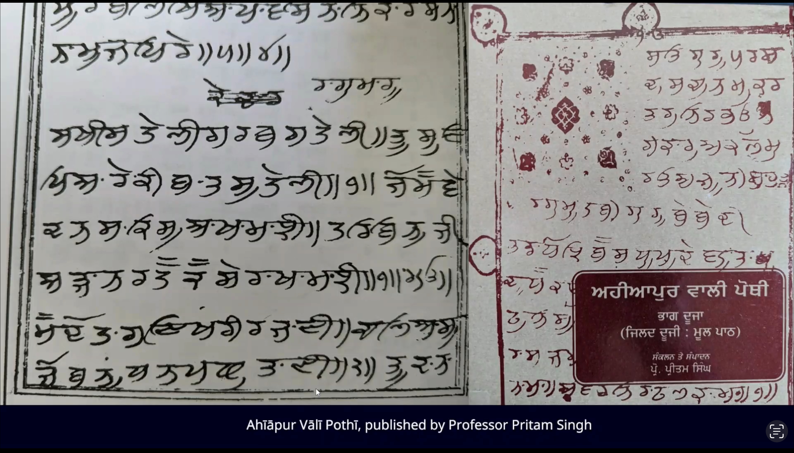
The Goindwal Pothis are the oldest extant manuscript compilation (an earlier pothi linked to Guru Angad is remembered but lost). They let us see Sikh scriptural culture at an early stage: written in larivaar, with words joined rather than separated, and vowel signs not always marked in the developed form — a vowel later shown with a fuller sign may appear only as a small dot. The script is recognisably Gurmukhi but in an earlier phase. The page shown is identified as Ramkali, Mahalla Pehla, with the Mool Mantar above. Reading these takes real training — and that difficulty teaches something: the scripture did not descend in a final polished form but passed through material, scribal, and linguistic histories that are part of how the tradition took shape.
Bibi Bhani Ji — seva, grace & the continuity of the lineage
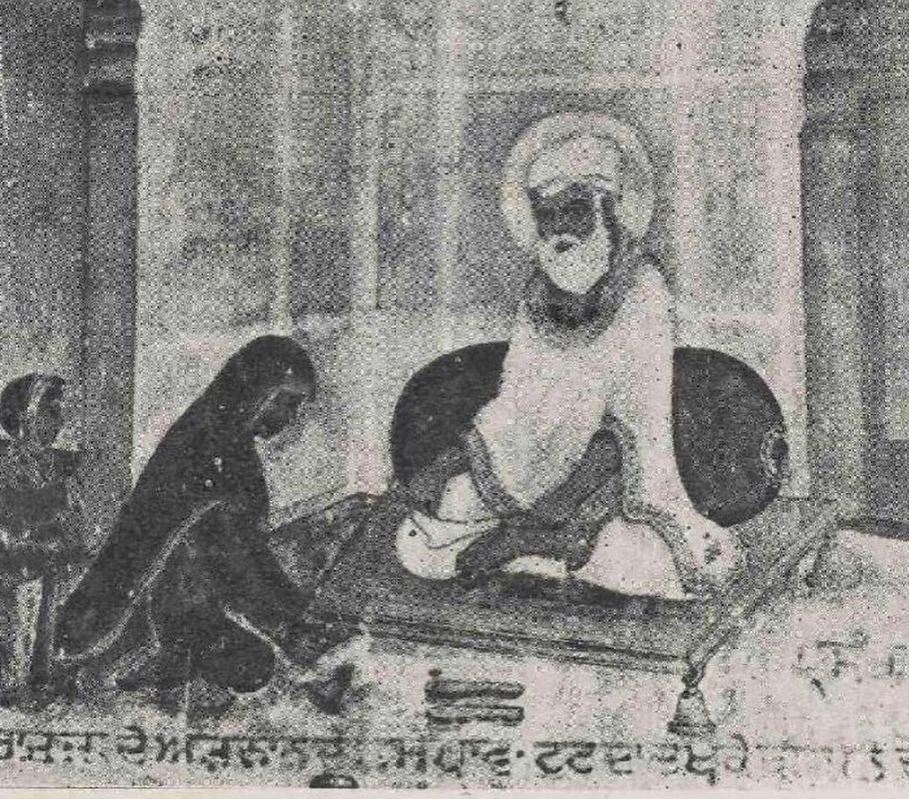
Bibi Bhani, daughter of Guru Amar Das, is remembered not merely as pious but as spiritually exalted — graced and "merged with the Divine." The central story: early one morning, while Guru Amar Das is in devotion, the leg of his seat is about to break; Bibi Bhani quietly places her hand beneath it so he will not fall. The wood cuts into her hand and she bleeds, but she does not cry out or interrupt his meditation, holding the seat up in silent seva. Moved, Guru Amar Das offers her a boon.
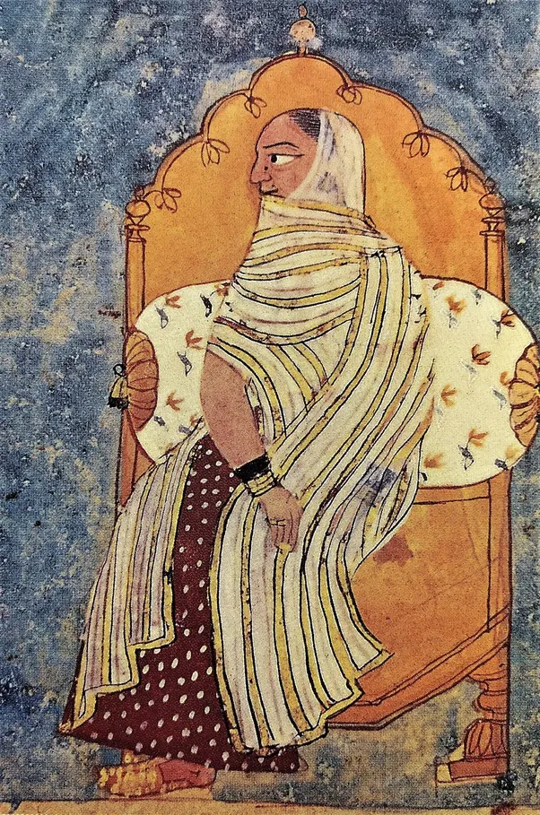
- Daughter of Guru Amar Das · wife of Guru Ram Das
- Mother of Guru Arjan · grandmother of Guru Hargobind
- Great-grandmother of Guru Tegh Bahadur · great-great-grandmother of Guru Gobind Singh
What she asks for is revealing: with succession disputes already appearing, she asks that the line of Guruship continue through her lineage — and so it does. She stands at the matriarchal root of the Sodhi line from Guru Ram Das to Guru Gobind Singh. Her place in Sikh memory is not decorative but foundational.
Mata Khivi, Bibi Amaro, and Bibi Bhani together distinguish the Sikh tradition from ascetic traditions in which women are absent, secondary, or seen as obstacles. Here women nourish langar, preserve and sing Gurbani, draw future Gurus into the Guru's presence, receive grace, and stand at the centre of the Guru lineage. These roles are formative, not marginal — and this commitment will shape what is included in, and excluded from, Guru Granth Sahib.
Guru Ram Das Ji — counsel, city-building, continuation
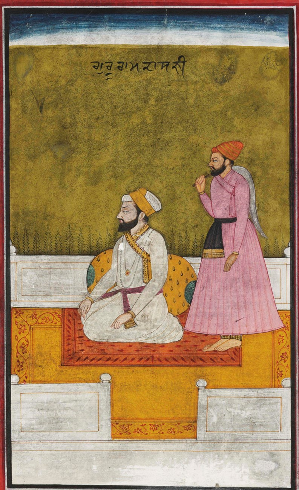
- 1534–1581 · reigned for 7 years · son-in-law of Guru Amar Das (Sodhi clan)
- Served as the Guru's counsel for legal and religious debates, even in imperial settings such as Akbar's court
- Established the new city of Ramdaspur, later Amritsar
- Composed 679 verses (fourth-largest contributor), including the Lāvāṅ
Before his appointment, Guru Ram Das already served Guru Amar Das closely, trusted to speak on the Guru's behalf — a sign of his stature. Like the Gurus before him he founds a new centre, Ramdaspur (Amritsar), favoured by Akbar with a grant of land that becomes the basis for the city. Poetry, leadership, settlement, and community-building go together once again; his bani includes the Lāvāṅ, still central to Sikh life.
- Each Guru builds a city (Kartarpur → Khadur → Goindval → Amritsar): the path is embodied, not only inward.
- Gurmukhi, festivals (Vaisakhi/Diwali), the masand network, and the Goindwal Pothis turn scattered devotion into an organised, transregional Panth.
- Mata Khivi, Bibi Amaro, Bibi Bhani are foundational — to langar, to Gurbani's transmission, and to the Guru lineage itself.
Part 5Assembling the Adi Granth & reading Gurbani
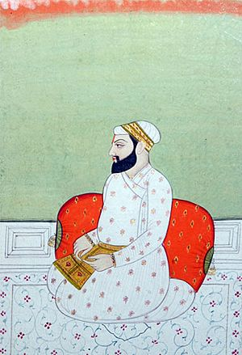
- 1563–1605 · reigned for 25 years · youngest son of Guru Ram Das
- Finalised the construction of Harimandir Sahib at Amritsar (marble then — gold-plated only in the 19th century under Ranjit Singh)
- Assembled the Adi Granth · composed the most verses in Guru Granth Sahib (2,200+), including Sukhmani Sahib
By now succession disputes are more intense: Guru Arjan's eldest brother, Prithi Chand, contests the appointment. Yet Guru Arjan is the one who fulfils Guru Ram Das's vision — completing Harimandir Sahib and its sarovar. His far-reaching contribution is the assembly of the Adi Granth, the earliest compiled form of what becomes Guru Granth Sahib.
The Adi Granth — who is in it, and why that matters
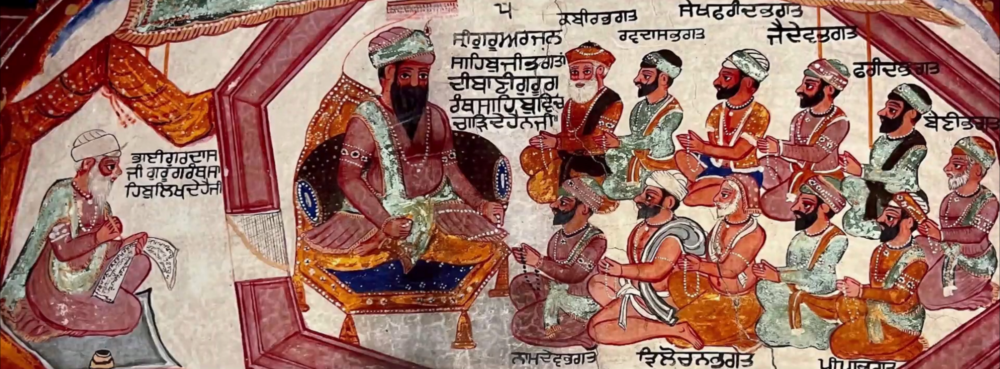
At this stage the text contains the bani of the first five Gurus (Guru Tegh Bahadur's is added later, when Guru Gobind Singh gives the final form at Damdama Sahib). But it is already more than Guru bani: it includes the Bhagats — Kabir, Ravidas, Sheikh Farid, Jaidev, Namdev, Pipa, Trilochan, Beni, and others. The fresco shows the Bhagats gathered around Guru Arjan while Bhai Gurdas sits to one side as scribe — presenting Guru Arjan not as a mere collector but as the one who receives, orders, and authoritatively positions these voices within a scriptural whole. Once compiled, the Adi Granth is placed on the takht within Harimandir Sahib and given devotional authority: the sangat bows before the scripture, not before Guru Arjan, who sleeps on the floor beside it while the text rests higher.
- Pashaura Singh — Akbar's 1598 visit, with its imperial entourage of artists and scribes, may have crystallised the value of an authoritative Sikh text to anchor the community.
- Gurbilās Pātshāhī 6 / Sūraj Prakāś — to create a stamp on legitimate Gurbani. Guru Arjan was shown forged writings passed off as Guru Nanak's (e.g. the yogic Pran Sangli); a definitive compilation would stop others composing texts, signing "Nanak," and claiming them as Gurbani.
- The Mundavani seal at the end reinforces closure, authenticity, and protection.
So the compilation is devotional, but also interpretive, protective, and communal: it defines what counts as Guru bani and guards the tradition from forgery and from drifting against its own inner grammar.
The structure — and why raag matters
- Liturgical prayers — Japu Jī ("meditation"), Sodar & So Purakh, Sohilā (the early core of Nitnem)
- 31 Rāgas — the bulk of the text, from Srī Rāga (14–93) to Rāg Jaijaivantī (1352–1429)
- Epilogue — Salok Vārān te Vadhīk (saloks beyond the vars), concluding with Mundāvaṇi & Rāgamālā
The organisation by raag is not decorative — it foregrounds the musical, performative character of the scripture. As Shackle and Mandair put it, "Guru Nanak and his successors wish their hymns to be sung to raags that express the emotions of the text, and the performance style to be compatible with the meaning of the hymn." Each raag evokes a mood, a ras, that shapes how the shabad is received. Some traditional exponents (Bhai Baldeep Singh and older kirtan lineages) hold that certain raags are distinctive to the Gurus themselves, shaped for particular shabads, not simply borrowed from Hindustani classical music.
So raag is essential to interpretation: performance works upon the self-conscious mind and draws it into relation with the deeper inward self, attuning consciousness to the Divine ground. The ras of the shabad is not separate from its musical form — this takes us back to Module 1's theme that the medium is part of the message. Gurbani cannot be reduced to verbal meaning alone; it is meant to be voiced, sung, and inwardly enacted.
What keeps Gurbani internally coherent — central themes
- The conception of divine Truth (sach) — grounded especially in the Mūl Mantar
- The way to realise that Truth in lived experience — truth cannot stay abstract; it is realised through honest, moral living
- Describing those who have become truthful (sachiār) — the saints who embody realisation
- Exposing false religiosity — pakhand (hypocrisy) and dikhava (showmanship), the intermediary who exploits his position
What is attacked in the fourth theme is not learning or visible religious identity in itself, but using religion as performance, status, or power. Truth in Guru Granth Sahib is never only contemplative — it is also discriminating, distinguishing living spirituality from religious fraud.
A traditional reading — three interwoven "chapters" (kāṇḍ)
ਅੰਮ੍ਰਿਤ ਵੇਲਾ ਸਚੁ ਨਾਉ ਵਡਿਆਈ ਵੀਚਾਰੁ ॥
ਨਾਨਕ ਏਵੈ ਜਾਣੀਐ ਸਭੁ ਆਪੇ ਸਚਿਆਰੁ ॥੪॥
The sampradāyik schools (Taksal, Nirmalas, the Giani Bunga) read Guru Granth Sahib through three broad kāṇḍ:
- Karam Kāṇḍ (action) — not empty ritual but the cultivation of right conduct and virtue: truthfulness (sat), contentment (santokh), compassion (daiā), righteousness (dharam), discernment (vivek), humility.
- Upāsanā / Bhakti Kāṇḍ (devotion) — kirtan, katha, seva, remembrance; a sustained devotional orientation that sees divinity everywhere.
- Gyān Kāṇḍ (wisdom) — seeing the Divine in all, and the dissolution of haumai, "I"-ness.
These are not watertight compartments — they interpenetrate. In Japji Sahib, one line — "karmi aavai kapra, nadri mokh duar" — already holds all three: through right action (karam) one receives the robe (kapra, read in the Faridkot Teeka as a siropa, a robe of bhakti), and through grace one reaches liberation's gate. The next lines move from devotion (remembering the True Name at amrit vela) toward wisdom (realising the Divine is all and true). They are not a ladder to climb in order. Some verses lean devotional (Guru Arjan desiring "neither kingdom nor liberation, but only love for the Divine's lotus feet"); others lean toward wisdom ("man tu jot saroop hai, aapna mool pachhan" — O mind, you are the form of Divine light, recognise your origin); and "vin gun kite bhagat na hoi" shows their dependence — without cultivating virtue, devotion cannot truly take root.
The assembly process — and the Bhagats as devotees of Guru Nanak
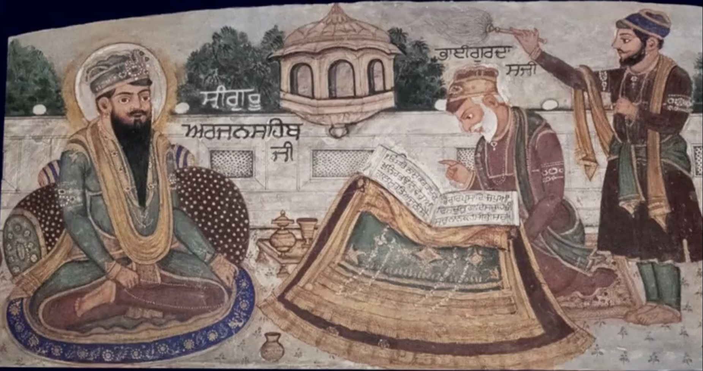

Inclusion in the scripture is not random — it reflects thematic and spiritual compatibility. Older narratives (Gurbilās Pātshāhī Chevīn) describe the Bhagats appearing before Guru Arjan to offer their writings; this is a symbolic telling, since the Goindwal Pothis show Bhagat bani was already being collected under Guru Amar Das. Its force is to express that the Bhagats belong within this revealed order — voices recognised as consonant with the Gurus' vision. The Goindwal Pothis even frame Bhagats like Kabir and Namdev as devotees of Guru Nanak (connecting back to B40, where Kabir is Baba Nanak's disciple). This shows in the very arrangement: within each raag, the Gurus' bani comes first in chronological order, then the Bhagats, with Kabir first among them. The order of the text is itself a theological ordering.
The Kartarpur Bir & other voices
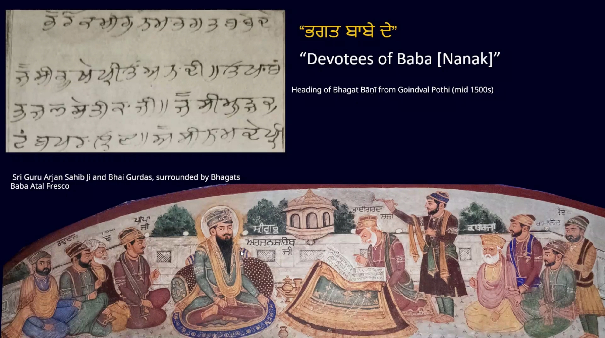
The Kartarpur Bir is the earliest manuscript form associated with Guru Arjan and Bhai Gurdas. Its opening folio bears Guru Arjan's own writing of the Mūl Mantar; another shows Rehras. The calligraphy, layout, and larivaar form are a different scriptural world — a reminder that the Adi Granth is a materially transmitted revelation, shaped and preserved through scribal labour.
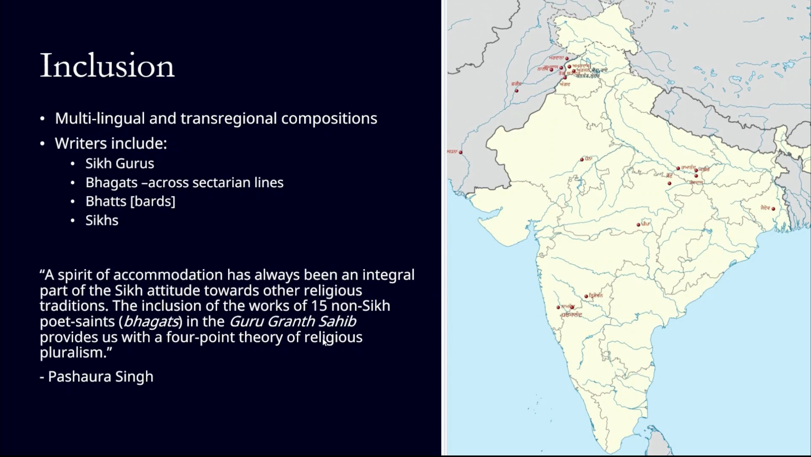
The scripture gathers many voices: the Bhatt Bani (toward the end), verses of prominent Sikhs such as Balwand, and even a few compositions associated with Bhai Mardana. It is also genuinely multilingual and transregional: Guru Nanak carries strong Punjabi inflection (and some Persian verses), Guru Arjan moves into Braj Bhasha, Guru Tegh Bahadur writes almost entirely in Braj, and the Bhagats write from their own regional and sectarian worlds — Sheikh Farid from a Sufi orientation. Inclusion itself becomes an interpretation rather than a mere archive.
Four poets, and Guru Arjan draws a line
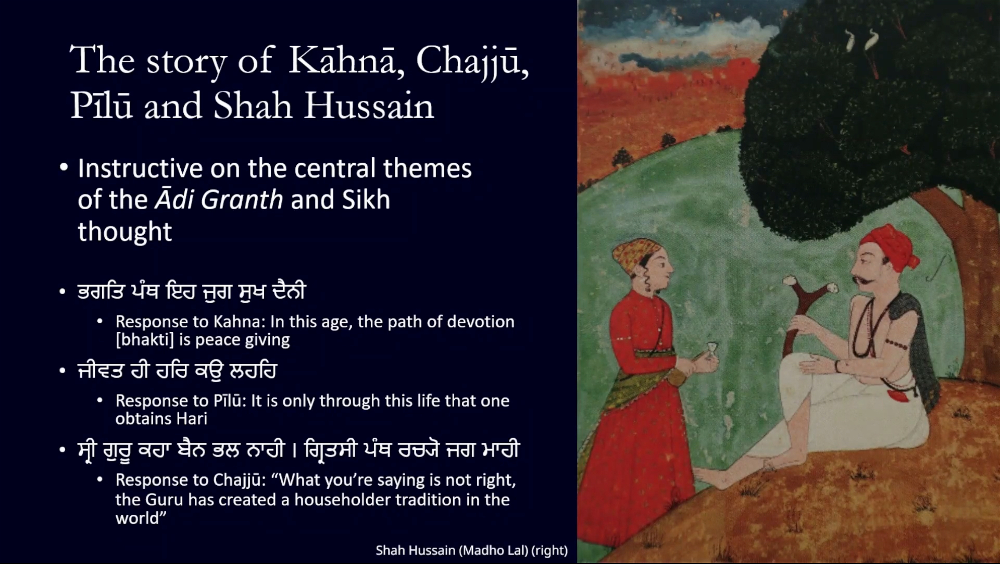
A story from Gurbilās Pātshāhī Chevīn helps think through inclusion and exclusion. Four poets — Kahna (Ganna), Pilu, Chajju, and Shah Hussain — bring their verses to Guru Arjan asking for inclusion. The point is that inclusion is not automatic: a poem may contain something true or striking and still be left out, because the task is to gather writing in line with the inner shape of Gurmat.
- Kahna speaks in a strongly non-dual register ("I am that reality the Vedas and Puranas sing of…"). The insight relates to Gyān Kāṇḍ and is, at a deep level, true — yet excluded, because such language alone can be seized by ego: people hear "I am that" and attach it to the little self rather than the dissolution of false identity. It lacks the devotional framing that protects it from egoic misuse.
- Pilu is rejected for life-denying despair — as if it were better not to be born. Guru Arjan's response: this human life is precisely where Hari is obtained. Gurmat acknowledges suffering but does not settle into bitterness toward existence.
- Chajju is rejected for speaking negatively of women, warning devotees to keep away from them. Guru Arjan rejects this directly: the Guru has established a grihasthi panth, a householder path rooted in family, relationship, and respect for women.
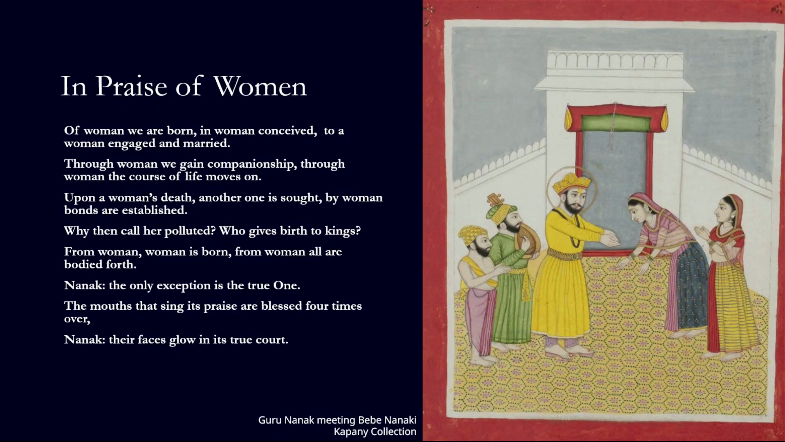
That this rejection of anti-women thinking is already present in old sources matters — it is not read back from modern concerns. It is grounded in Guru Nanak's own bani: when a fanatical ascetic enters the congregation and objects to the presence of women, Guru Nanak answers that human life itself comes through woman — birth, relation, all of it — and only the True One is beyond such relation. The attack on women is an attack on the very conditions of human existence; the ascetic mistakes avoidance for purity and exclusion for holiness. A verse attributed to Kabir outside Guru Granth Sahib — that women destroy bhakti, mukti, and gyan — was, tellingly, not included.
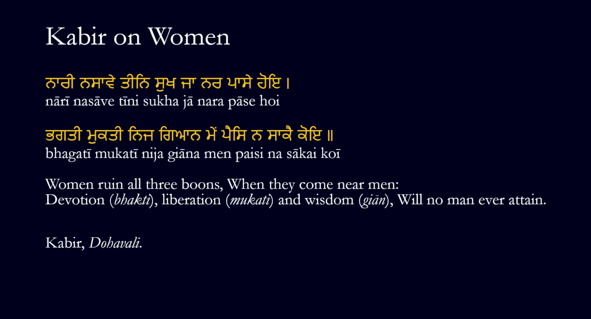
Returning to Kahna: Guru Arjan concedes the non-dual statement is, in the highest sense, true — but in Kalyug people hear it through ego, inflating the little self rather than dissolving it. So it must be joined to bhakti. An Ayurvedic image is used: wisdom alone is like ghee — rich but, taken by itself, it overburdens and "puffs up"; devotion is the sweetness that lets it be digested. The selection process is therefore itself a guide to interpretation: what is included is true in a form that leads the seeker rightly.
One line, more than one meaning
In the older commentarial traditions, a single line of Gurbani can legitimately carry more than one meaning — which is why tikas offer several layers for the same pankti. Take "Visar na dataar" from Japji Sahib. Read devotionally: "May I not forget the One who gives to all" — placing agency with the Divine, a remembrance that sustenance and gifts are given, not self-produced. Read toward gyan (as in Suraj Prakash): the "Giver" is what I truly am beyond name, story, and ego — "May I not forget that I am that reality which gives to all," the dissolution of the false self into Divine light. The same line unfolds in more than one authentic direction; a kathavachak is expected to open a line through action, devotion, and wisdom together. Gurbani is not flattened into one interpretive lane.
Two ways of reading — dualistic & non-dualistic
Finally, Pashaura Singh's contrast of two broad modes. The dualistic style separates words from their setting — isolating them as single signifiers of one stable meaning, emphasising objectivity, rationality, and hierarchy, with paradox sitting uncomfortably and context secondary. It is associated with twentieth-century Singh Sabha interpretation, shaped by English education and Western historical method. The non-dualistic style is more holistic: words live within context; the utanka (situational background of a shabad) matters — who was being addressed, what provoked it, which metaphors were alive, how terms like Ram or Hari were being used. Here performance matters as much as information: a shabad is sung, heard, recited, and lived; its raag and recitation are part of its meaning. The sampradāyik traditions keep context, performance, recitation, and meaning together, preserving santhya (proper recitation): even though Gurbani critiques empty repetition, recitation done with love still bears fruit.
Gurbani is described as "new every morning." Through practices like taking a hukamnama, the same bani speaks freshly into different situations — not because meaning is invented arbitrarily, but because the text, approached devotionally and contextually, is capacious enough to stay alive. The deeper question running through the whole module: is Gurbani a text to decode and master, or a revealed, sung, many-layered source of transformation to be entered through practice, devotion, context, and inherited wisdom?
- Guru Arjan assembles the Adi Granth — Gurus first, then the Bhagats (Kabir first) — sealed with the Mundavani to protect authentic Gurbani from forgery.
- Its structure (liturgy → 31 raags → epilogue) teaches that Gurbani is meant to be sung: raag carries the ras and is essential to interpretation.
- Inclusion is itself interpretation: truth is accepted only joined to bhakti (the four-poets story; the grihasthi panth's respect for women).
- One line can hold many meanings; the non-dualistic, contextual, performative reading keeps Gurbani "new every morning."